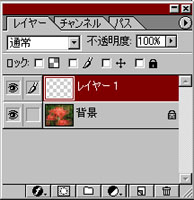

section 03
レイヤーとは
複数の画像を重ねていけるレイヤー機能は、Photoshopにおける画像加工の基礎中の基礎です。概念をしっかりと理解してください。
まずガラスでもセルシートでもいいので、透明な板を思い浮かべてください。そしてそれを赤いマジックペンで塗りつぶしたとします。
→
次にもう一枚、透明な板を取り出してさっきの板の上に重ねてみましょう。さて、どう見えるでしょうか?
当然、下の板の赤い色が透けて見えますよね。
では、今度は上の板の真ん中だけ青いマジックペンで塗りつぶします。さて、今度はどう見えるでしょう。
→
真ん中だけ青くて、その周りが赤い板が出来上がりますね。
レイヤーとは、この透明な板のことを言うのです。Photoshopではこのレイヤーを何百枚と重ねて作業することも出来ます。
実際に使ってみよう
|
上記の概念を理解したら、実際に使ってみましょう。レイヤーは頭では理解していても、慣れないと混乱することがあるので、何度も実践しましょう。
他にもレイヤーの代表的な機能も紹介します。
レイヤーの機能は、使えば使うほど絵に奥行きが生まれ、より個性的な作品を作ることが可能となります。
ぜひ活用してください。
|
|
|
それでは、Photoshopで素材となる画像を開きましょう。今回は花の写真を使います。
|
|
開けましたか?
では、画面の右側を見てください。
左図のようなウィンドウがありますか？
これを「レイヤーパレット」と呼びます。ここに画像のレイヤーの状態が表示されます。
先ほどの例で言うと、今は一番下のガラスに色が塗ってある状態ですね。（一番下のレイヤーの名前は自動的に「背景」となります）
|
|  |
ではレイヤーパレットのの部分を１回、クリックしてください。
新しいレイヤー、「レイヤー１」が追加されました。２枚目のガラスが重なったということです。
このガラスは透明なので、画像自体の見た目は変わっていませんね?
ではブラシツールを使って、ガラスに色をつけていきましょう。
|
|
色を塗った場所は、背景が見えなくなりました。では、さらに１枚、新しいレイヤー「レイヤー２」を作って色を塗りましょう。
|
|
どうですか、「レイヤー１」の上に塗れましたか？
|
|
では、ここでレイヤーを１枚ずつ見ていきましょう。
・背景
・レイヤー１
・レイヤー２
チェスの盤のような格子状の模様は、そこが「透明」であることを表します。「白」は透明ではなく「白」という「色」であることに注意してください。
|
| |
|
■レイヤーの表示、非表示
では、次にレイヤーの機能を紹介します。レイヤーの名前の横にある目のマークを押してください。目が消えて、そこのレイヤーが消えましたね。
これは実際に消えたわけではありません。見えなくしただけです。眼のあった場所をもう一度クリックすれば、また表示できます。
|
 |
|
■不透明度
現在、選択されているレイヤーの不透明度を変えることができます。つまり薄くすることができます。これは「背景」には使えません。
|
| |
|
■下のレイヤーとグループ化
これを行ったレイヤーは、下のレイヤーの透明ではない場所、何か色がついている場所にだけ表示されるようになります。
非常に便利な機能ですので、実際に使って理解してください。
「レイヤー」タグの中の「下のレイヤーとグループ化」で実行できます。
|
| |
|
■下のレイヤーと結合
これを行ったレイヤーは、下のレイヤーと同じ一つのレイヤーになります。色が重なっている部分は上のレイヤーの色が適用されます。
これも「レイヤー」タグの中の「下のレイヤーと結合」で実行できます。
|
| |
|
■レイヤーの順番の変更
レイヤーウィンドウの中で、順番を変えたいレイヤーをドラッグして、変えたい順番の所まで持っていってください。
ただし「背景」より下には移動できません。
|
|
ちょっと待った！
Q「そろそろ１回、保存したいのですが、【ファイル形式】というのがよく分かりません」
A「【ファイル形式】というのは『音楽ファイル』、『画像ファイル』や『テキストファイル』といったファイルの種類のことです。
ファイル名の後に『.jpg』とか『.txt』という文字が書かれていませんか？これは【拡張子】といって、そのファイルがどんな種類のファイルなのかを表しています。
では、代表的な画像ファイルの拡張子を紹介します。
■【.JPG】ジェイペグ
画像の要領を強く圧縮して保存している種類です。要領は軽いですが画質が劣ります。最も一般的な形式です。
■【.BMP】ビーエムピー
画像を圧縮しないで保存している種類です。画質はきれいですが、非常に重いです。
■【.GIF】ジフ
画像を圧縮して保存している種類です。透明度やアニメーションといった他では保存できない情報を保存できます。
■【.PSD】ピーエスディー
Photoshop独自の形式です。Photoshopが無いと閲覧できません。レイヤーの状態などを保存できます。
編集中の画像を保存するときは、必ずこの形式にしましょう。
|
section2へ戻る| section4へ進む